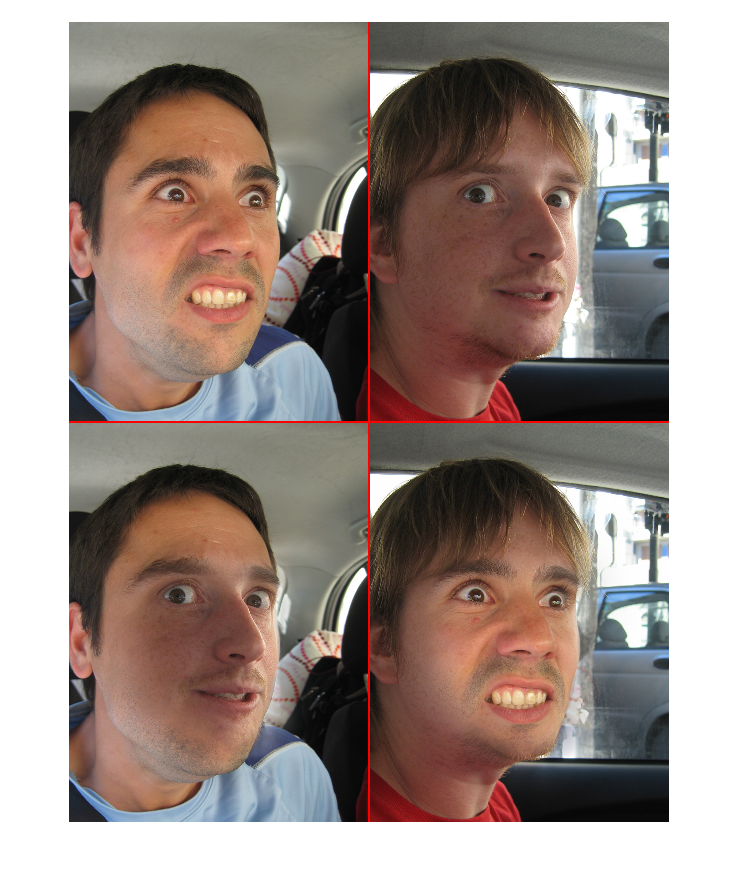

MultibandBlending example
Example of how to use the class to perform a Multi-Band Blending. It is based on the paper: P. BURT and E. ADELSON, A Multiresolution Spline with Application to Image Mosaics, Acm Transactions on Graphics, vol. 2, no. 4, pp. 217-236, 1983.
Contents
Open load the images
First of all we have to load the mask and the images that we want to fuse.
I1 = double(imread('./Resources/TestFace_1.jpg')) / 255; I2 = double(imread('./Resources/TestFace_2.jpg')) / 255; Imask = double(imread('./Resources/TestMask.png' )) / 255; mask = Imask(:, :, 1);
Initialize the MultibandBlending object
In order to initialize the object we can define the number of pyramid levels and the blur efect of the mask.
mb = MultibandBlending('NumLevels', 4, 'MaskBlur', 26);
Strich the images
We sttich the images using the stitchMask function.
res1 = mb.stitchMask(I1, I2, mask); res2 = mb.stitchMask(I2, I1, mask);
Show results
Finally we show the results.
sizeIm = size(I1); newSize = sizeIm; newSize(2) = newSize(2) * 2; newSize(1) = newSize(1) * 2; finalIma = zeros(newSize); finalIma( 1:sizeIm(1), 1:sizeIm(2), :) = I1; finalIma( 1:sizeIm(1), sizeIm(2) + 1:end, :) = I2; finalIma( sizeIm(1) + 1:end, 1:sizeIm(2), :) = res2; finalIma( sizeIm(1) + 1:end, sizeIm(2) + 1:end, :) = res1; finalIma(:, sizeIm(2) - 1:sizeIm(2) + 2, 1) = 1; finalIma(:, sizeIm(2) - 1:sizeIm(2) + 2, 2) = 0; finalIma(:, sizeIm(2) - 1:sizeIm(2) + 2, 3) = 0; finalIma(sizeIm(1) - 1:sizeIm(1) + 2, :, 1) = 1; finalIma(sizeIm(1) - 1:sizeIm(1) + 2, :, 2) = 0; finalIma(sizeIm(1) - 1:sizeIm(1) + 2, :, 3) = 0; figure, imshow(finalIma);
Warning: Image is too big to fit on screen; displaying at 50%